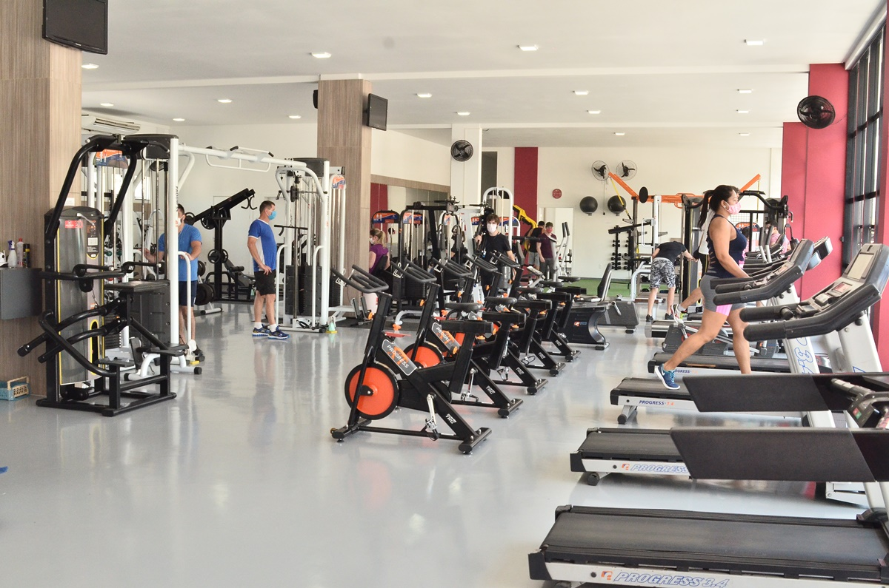
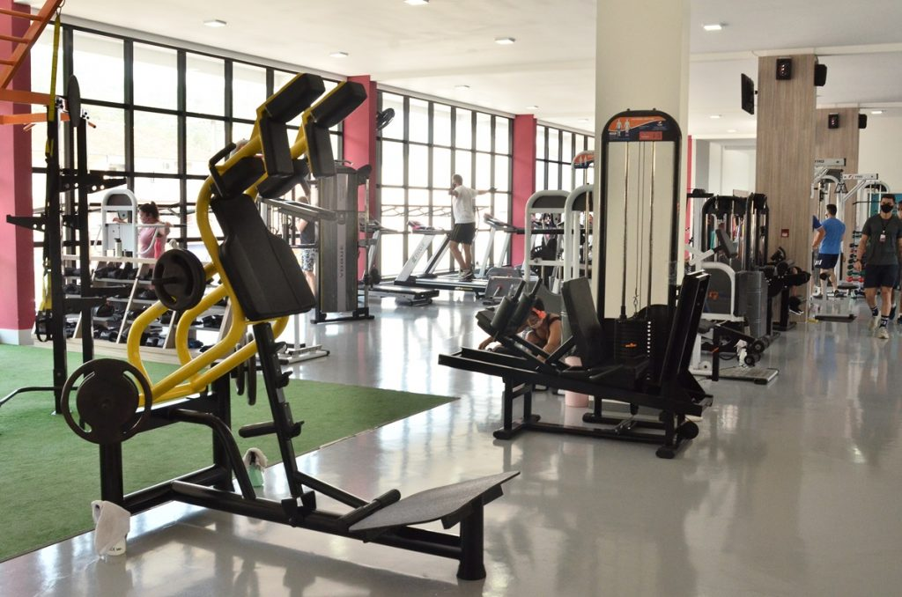
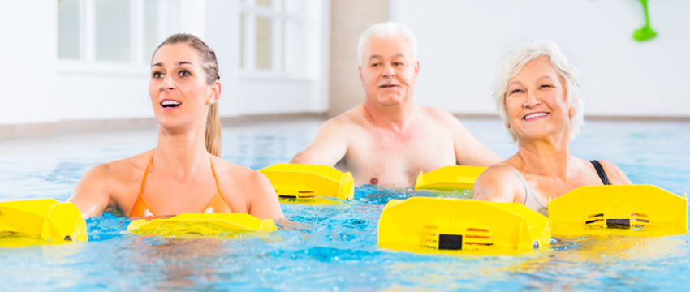
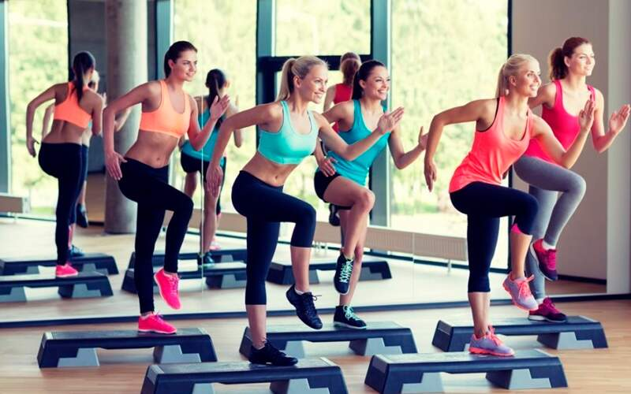

 Musculação:
Atividades em modernos equipamentos, salas climatizadas e amplas. Os exercícios de musculação melhoram a capacidade funcional docorpo em espaços que permitam movimentos em mais de um plano e eixo de movimento, admitindo certo grau de
desafio ao equilíbrio e, que estimulem a coordenação motora e a lateralidade.
Treinamento Funcional:
Programa funcional que proporciona resultados rápidos e eficientes, intercalando treinos coletivos e personalizados. Explora-se todos os benefícios latentes em sua prática para conquistar uma vida mais saudável, maior ampliação de sua capacidade de movimento, necessidades de readequação posturaI, possibilitando aumento da consciência e autonomia do movimento somados à socialização que uma aula coletiva pode promover aos seus participantes.
Hidroginástica:
condicionamento físico e melhora do sistema cardiorespiratório, enrijecimento muscular, perda calórica, correção da postura e relaxamento. Esta atividade possui algumas particularidades em que alguns fatores físicos, interferem no perfil e no programa de atividades. Podemos citar a força de empuxo que ocorre de maneira antagônica à força da gravidade para além de permitir viscosidade e flutuação. As atividades aquáticas possuem variantes que permitem algumas ações específicas com maior facilidade.
Ginástica:
Programas de ginástica exclusivos, com aulas adaptadas e preparadas de acordo com as necessidades de cada classe e perfil fisiológico dos participantes. É uma atividade indicada para todos os níveis de condicionamento físico. Aula com elevado gasto calórico. Tem como principais benefícios melhora da resistência e da força muscular, da postura, da coordenação motora, dos sistemas cardiorrespiratório e vascular.